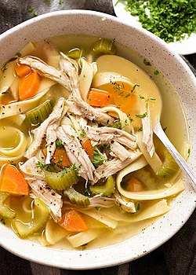

Chicken Noodle Soup

Description
A heart warming bowl of comfort. This is a family recipe passed down by my grandmother.
May a bowl of it heal your soul and sickness like many bowls have healed my families and my own.!
Enjoy!
Ingredients
- 12 oz chicken breast
- 2 cups of fresh chopped carrots
- 2 cups of fresh chopped celery
- 1 medium onion diced (any color onion will do)
- 3 900ml containers of reduced sodium chicken broth
- 1 to 2 tablespoons of Knorr chicken broth Mix
- 1 tablespoon of dried or 2 tablespoons of fresh Thyme.
- 2 tablespoons of Olive Oil
- 1-2 dried Bay Leaves.
- 1 Cup of your favorite kind of pasta or noodle. I often use Egg Noodles or small Pasta Shells
Recipe Steps:
- Chop carrots and celery into bite sized chunks. Set aside
- Dice chicken into bite sized chunks. Set aside.
- Get a large soup pot or dutch oven on the burner at medium-high heat. Add 1 tablespoon olive oil to the pain. Allow pan and oil to become hot.
- Add chopped vegetables to the pot. Allow them to sweat and build flavor, stirring enough to make sure they do not stick to the bottom of the pot for 3-5 mins.
- Remove vegetables from the pot. Pour in remaining 1 tablespoon of olive oil. Allow pan to become hot again.
- Once pan gets up to temp (should be close to smoking) add in chicken. Stirring once chicken begins to brown. Don't worry too much if the bottom of the pot becomes brown. We want this, this is flavor town.
- After chicken is browned evenly, re-add vegetables. Reduce heat to medium-low. Stir together vegetables and chicken, this is called marrying the flavors. 2 mins.
- Pour in the 3 900ml containers of chicken stock. Give everything a nice stir.
- Add in the 1 tablespoon of Thyme and 1-2 bay leaves.(If you prefer "clean soups" you can make a spice bag out of cheese cloth and place it in the soup to simmer and remove when ready to serve)
- Allow to simmer on medium-low heat for the next 1-2 hours. DO NOT allow to boil. Only simmer. If you allow soups to boil they get a "rubber" like texture and taste.
- Add in noodles about a half hour before you want to eat the soup. If you add them at the start of the simmering process they will be soggy and not enjoyable.
Crock Pot Instructions
- Follow instructions up to step 7 in soup pot.
- Step 8: Transfer contents of soup pot to Crock Pot
- Step 9: Pour the 3 900ml containers of chicken stock into Crock Pot. Give everything a nice stir.
- Step 10: Add in the 1 tablespoon of Thyme and 1-2 bay leaves.(If you prefer "clean soups" you can make a spice bag out of cheese cloth and place it in the soup to simmer and remove when ready to serve)
- Step 11: Allow to simmer on medium-low heat for the next 1-2 hours. DO NOT allow to boil. Only simmer. If you allow soups to boil they get a "rubber" like texture and taste.
- Step 12: Add in noodles about a half hour before you want to eat the soup. If you add them at the start of the simmering process they will be soggy and not enjoyable.
Home